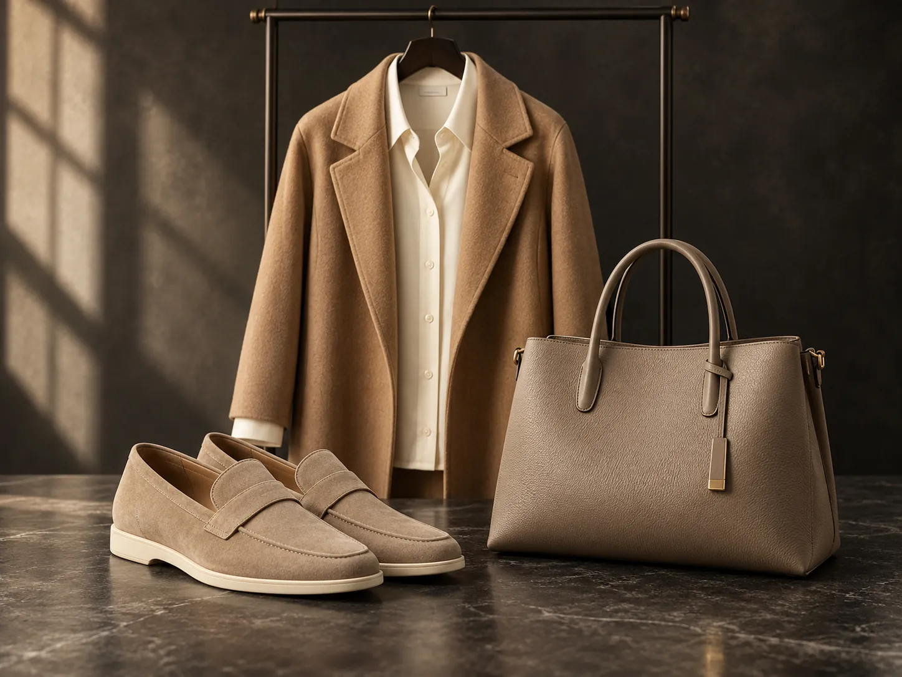
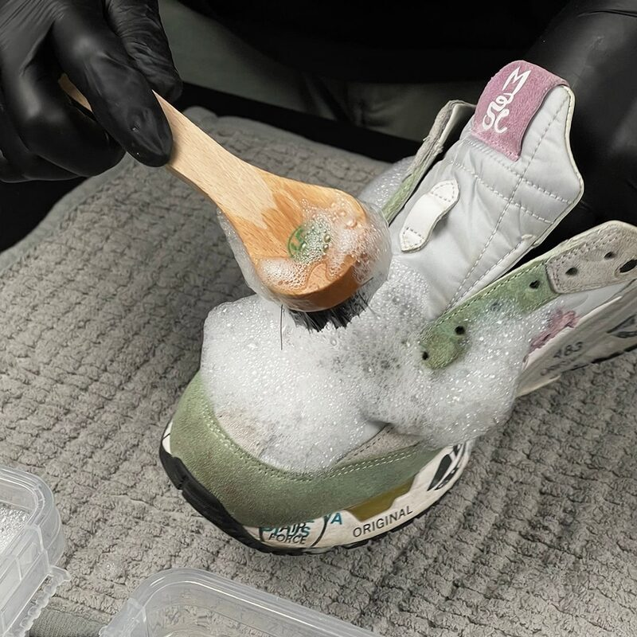
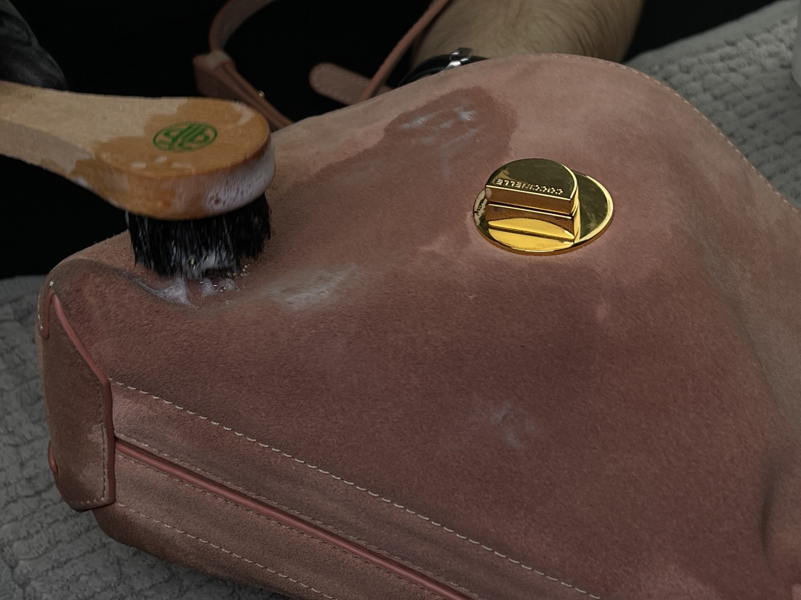
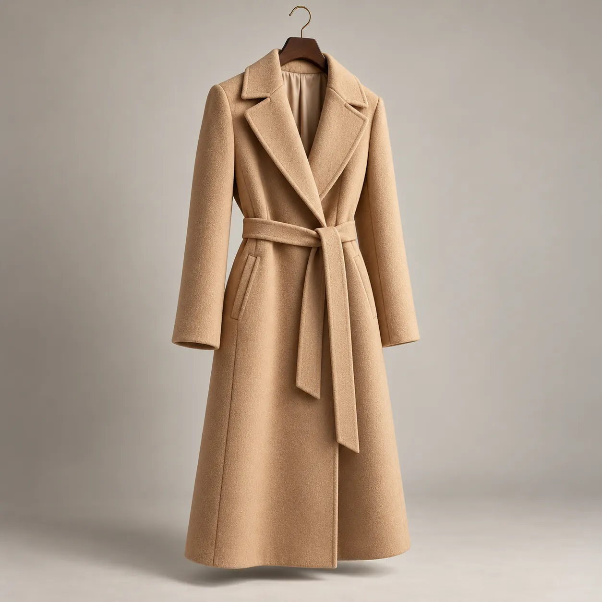

BLEACH MOSCOW / КАТАЛОГ УСЛУГ
Услуги мастерской
Бережный уход за тем, что вам дорого.
От деликатной чистки до сложной реставрации.

Обувь. Сумки. Гардероб.Обувь

Глубокая чистка. Бережный уход. Снова любимая пара.
Уход для вашей вещи
01Комплексная чистка
5 000 ₽
Глубокая чистка обуви снаружи и внутри с бережным уходом за материалами.
В услугу входит:
- Чистка верха, подошвы и подкладки; стирка шнурков.
- Выведение пятен, освежение цвета и уходовые средства.
- Обработка внутренней части дезодорантом.
Результат: Чистая, ухоженная пара с обновлённым внешним видом.
02Комплексная реставрация
от 8 000 ₽
Восстановление пары, когда одной чистки уже недостаточно.
В услугу входит:
- Комплексная чистка снаружи и внутри.
- Устранение потёртостей и поверхностных дефектов.
- Подбор оттенка, восстановление цвета и финальный уход.
Результат: Восстановленный цвет и более аккуратный вид обуви.
03Замена подошвы Loro Piana
12 000 ₽
Замена пожелтевшей, потрескавшейся или изношенной подошвы с сохранением верха любимой пары.
В услугу входит:
- Деликатный демонтаж старой подошвы.
- Установка новой с сохранением характерных деталей.
- Точная подгонка по размеру и конструкции обуви.
Результат: Ухоженный вид и продление срока службы пары.
04Сервисный центр Loro Piana
Стоимость — после оценки
Профессиональный уход за лоферами и кедами Loro Piana.
В услугу входит:
- Деликатная чистка и восстановление цвета.
- Реставрация и замена изношенной подошвы.
Результат: Уход, подобранный под модель и состояние вашей пары.
05Комплекс UGG
Стоимость — после оценки
Бережное очищение UGG и уход за замшей с учётом состояния пары.
В услугу входит:
- Удаление загрязнений и следов реагентов.
- Уход за материалом и освежение внешнего вида.
Результат: Чистая замша и более ухоженный вид обуви.
06Набойки / профилактика
Набойки — от 1 000 ₽ · Профилактика — 3 500 ₽
Защита каблуков и подошвы от износа с сохранением эстетики обуви.
В услугу входит:
- Замена изношенных набоек.
- Установка профилактики с подбором материала и цвета.
Результат: Защищённая подошва и сохранение геометрии каблука.
07Ремонт задников
Стоимость — после оценки
Восстановление изношенной внутренней части обуви в области пятки.
В услугу входит:
- Подбор подходящего материала.
- Ремонт или замена повреждённых участков.
Результат: Аккуратный задник и более комфортная посадка.
08Швейные работы
Стоимость — после оценки
Ремонт швов, подкладки и повреждённых элементов обуви.
В услугу входит:
- Оценка конструкции и возможности ремонта.
- Восстановление швов и замена изношенных деталей.
Результат: Аккуратно восстановленные элементы вашей пары.
09Бренды
Примеры работ
Чистка, ремонт и реставрация обуви премиальных брендов. Посмотрите реальные результаты работы мастерской.
Сумки и аксессуары

Уход за вещами, которые хочется сохранить.
Уход для вашей вещи
01Комплексная чистка сумки
от 4 000 ₽
Деликатное очищение внешней поверхности сумки из кожи, замши или текстиля.
В услугу входит:
- Удаление пыли, загрязнений и жировых следов.
- Обработка профессиональными средствами и финальный уход.
Результат: Чистая, ухоженная сумка с сохранением свойств материала.
02Реставрация углов
5 000 ₽
Локальное восстановление потёртых и повреждённых углов сумки.
В услугу входит:
- Обработка потёртостей и задиров.
- Подбор оттенка, локальное окрашивание и защитное покрытие.
Результат: Аккуратные углы и более ухоженный вид сумки.
03Покраска клатча
Стоимость — после оценки
Восстановление цвета клатча из гладкой кожи после потёртостей и выцветания.
В услугу входит:
- Подготовка поверхности и подбор оттенка.
- Окрашивание с учётом материала и состояния изделия.
Результат: Более ровный цвет и обновлённый внешний вид.
04Локальная реставрация (без полной покраски)
от 5 000 ₽
Устраняем отдельные дефекты, сохраняя оригинальное покрытие остальной поверхности сумки.
В услугу входит:
- Подготовка повреждённого участка и подбор цвета.
- Локальное восстановление и защитная обработка.
Результат: Ухоженный вид без полного перекрашивания изделия.
05Комплексная реставрация сумки
Стоимость — после оценки
Восстановление сумки с учётом материала, конструкции и степени износа.
В услугу входит:
- Необходимая чистка и устранение поверхностных дефектов.
- Восстановление цвета и финальная обработка.
Результат: Более аккуратный внешний вид любимой вещи.
06Чистка подкладки
5 000 ₽
Отдельный уход за внутренней частью сумки без полной чистки изделия.
В услугу входит:
- Деликатная очистка и локальное выведение пятен.
- Обработка с учётом материала подкладки и конструкции сумки.
Результат: Чистая, ухоженная подкладка.
07Полировка фурнитуры/ гальваника
Стоимость — после оценки
Восстановление внешнего вида металлических деталей сумки.
В услугу входит:
- Оценка состояния фурнитуры и покрытия.
- Подбор полировки или гальванического восстановления.
Результат: Более аккуратный вид фурнитуры.
08Перешив ручек
Стоимость — после оценки
Ремонт или замена изношенных ручек сумки с учётом её конструкции.
В услугу входит:
- Подбор материала и оттенка.
- Перешив с сохранением формы и креплений.
Результат: Восстановленные ручки для дальнейшего использования сумки.
09Перешив кожи на сумках Louis Vuitton
Стоимость — после оценки
Замена изношенных кожаных элементов сумок Louis Vuitton.
В услугу входит:
- Оценка деталей и подбор подходящей кожи.
- Перешив с учётом конструкции и характера изделия.
Результат: Аккуратно восстановленные кожаные элементы.
10Реставрация / восстановление уреза
Стоимость — после оценки
Обновление защитного покрытия на открытых срезах кожи.
В услугу входит:
- Подготовка повреждённых краёв.
- Подбор оттенка и восстановление покрытия уреза.
Результат: Ровные, аккуратные края кожаных деталей.
11Замена молнии на сумке
Стоимость — после оценки
Замена повреждённой молнии с учётом формы и конструкции сумки.
В услугу входит:
- Подбор подходящей молнии.
- Демонтаж старой и аккуратная установка новой.
Результат: Исправная застёжка и удобство использования.
Химчистка одежды

Бережный уход за любимой одеждой.
Что мы делаем
01Химчистка верхней одежды
Стоимость — после оценки
Бережная чистка верхней одежды с учётом состава ткани, отделки и маркировки по уходу.
В услугу входит:
- Оценка загрязнений и выбор способа обработки.
- Чистка с учётом особенностей изделия.
Результат: Чистая, ухоженная верхняя одежда.
02Химчистка сорочек
Стоимость — после оценки
Уход за сорочками с вниманием к ткани, воротнику и манжетам.
В услугу входит:
- Оценка пятен и состояния материала.
- Подбор подходящего способа чистки.
Результат: Свежая, аккуратная сорочка.
03Химчистка трикотажных изделий
Стоимость — после оценки
Деликатная чистка трикотажа с учётом состава волокон и структуры вязки.
В услугу входит:
- Проверка маркировки и состояния изделия.
- Подбор бережной обработки для материала.
Результат: Чистый, ухоженный трикотаж.